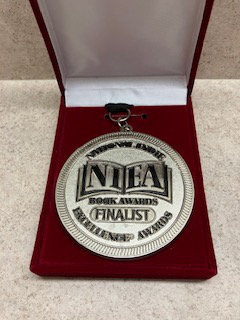
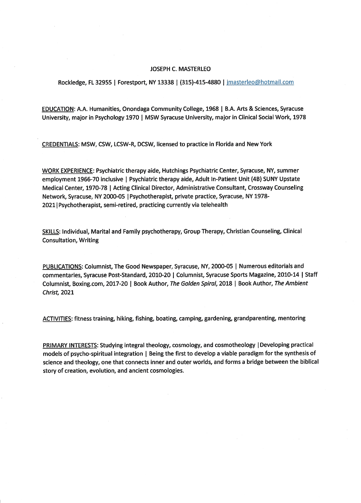

Back Cover Text
"There is something to narrow and missing in gospel as it is presented to us. In spite of appearences, our age is more religious than ever; it only needs stronger meat"
~Pierre Teilhard de Chardin
"A religion old or new, that stressed the magnificance of the universe as revealed by modern science might be able to draw forth reserves of reverence and awe hardly tapped by conventional faiths. Sooner or later, such a religion will emerge."
~Carl Sagan

The National Indie Excellence Awards are given annually, celebrating self and independent publishing excellence. NIEA recognizes these works as valuable and worthy as those that are corporately published.
The Ambient Christ
That is because the only reality that could be present, were it present, would prevent or resolve the conflict, dissolve the division, and end the argument. There could be no conflict if all participated in that reality and/or the focused intent to pursue same toward that end. Deficient by nature in the earnest and peaceful pursuit of same, and inclined to siloed self-referencing, most mortals attempt this by means of argument, each believing his idea is valid. Such is a perspective tantamount to looking at a tiny segment of reality through a soda straw, defining the whole by a single part. By obersving all division and conflict over a lifetime, none more fervent than between religion and science, it became partially obvious that said reality (the infallible) has yet to be substantively revealed to the other side. This book is an attempt to end that conflict, and all human conflicts where differences are preferred, sought, and defended over those of commonality, civility, and union. While the grand synthesis proposed herein claims no infallibility, it points in the direction where its mysteries may be discovered in nature and supernature. It is the thesis of this book that are far from divided. Rather, they are seamless interbeing realities hidden in plain sight, visible to eyes prepared to see them. Notions of the inherent interconnectedness and communality of all things are not new, they date to ancient times. What is new is the proposed synthesis herein that attempts to explain the “how” of their seamless unity. Medievalists spoke of the “Great Chain of Being,” what is now referred to as the ecosystem, Egg of Life, or Circle of Life. The chain model is a hierarchy (or continuum), one that preserves the inherent dignity of all things which participate in divine being in various ways, their center and source. That center is also their ground of coherence, holding all things together in an enchanted universe. This view holds to the notion that once the chain is broken, and just one link not seen or respected as sacred, the vision of its individual sacrality, and place in the whole vision collapses. When divinity is not acknowledged in all things, the basis is lost for seeing it in anything. Absent that vision, and reality becomes merely one of private preferences, slanted perspectives, and prejudices with no common ground. As a result, the Cosmic Egg shatters.
~Joe Masterleo,
November 2023
Purchase The Ambient Christ
About the Author
Joseph C. Masterleo, LCSW-DCSW, is a clinical social worker in private practice in Syracuse, NY and Rockledge, FL.
His half-century of service in the mental health care field includes faith-based counseling, with an emphasis on psycho-spiritual integration.
His subspecialty involves developing a novel paradigm for the synthesis of science, religion, and psychology, identifying the energy and geometric patterns that connect the quantum world with space-time.
His model explains how spirit and matter can co-exist as two facets of one reality in a unified field, dissolving the walls of partition between previously siloed disciplines.
Inspired by the writings of Thomas Merton (ecumenism), Teilhard de Chardin (synthesis), Thomas Berry (ecotheology), and others, his objective is to tell a new, future-looking story for the Ecozic Age, one that forms a connecting bridge between the biblical story of creation, modern science, and ancient cosmologies.
Joe's Other Writings
Joe's Psychology Today Profile
